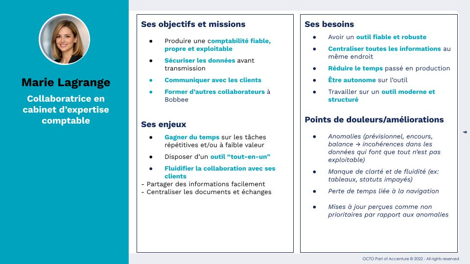
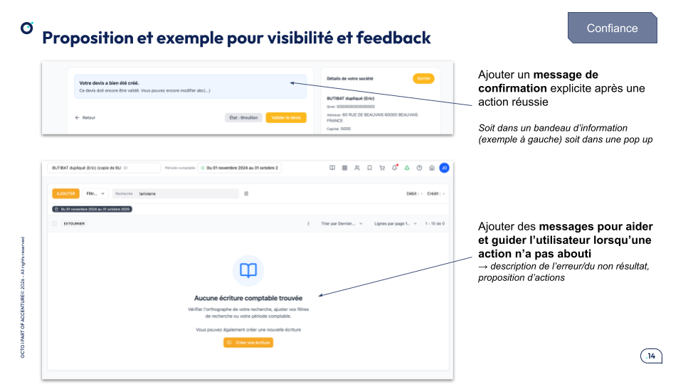

Étude de cas
Identifier les frictions et améliorer l’expérience d’un SaaS complexe (Bobbee / ISAGRI)
Audit UX, recherche utilisateur et product design menée afin d’identifier les points de friction, améliorer l’expérience utilisateur et proposer des évolutions concrètes du produit, notamment autour de la data et de l’intelligence artificielle.
Le point de départ
Bobbee est un logiciel intelligent de comptabilité, de gestion financière et d’analyse de données, pensé pour créer une base d’information collaborative entre cabinets comptables et entrepreneurs.
Le produit apportait déjà une vraie valeur, mais au fil de son évolution, certaines incohérences d’interface, plusieurs anomalies techniques et des parcours jugés complexes commençaient à freiner l’expérience utilisateur et la productivité.
Les équipes avaient des signaux venant du terrain, notamment via le support et les retours utilisateurs, mais ces difficultés n’avaient pas encore été analysées de manière structurée. L’enjeu était donc de comprendre précisément où se situaient les frictions, ce qu’il fallait améliorer à court terme, et quelles opportunités d’évolution produit pouvaient être explorées ensuite.

Projet : rendre un produit complexe plus fluide
L’objectif n’était pas seulement de relever des problèmes d’interface, mais de donner aux équipes une lecture claire de l’expérience réelle du produit : ce qui ralentissait les usages, ce qui nuisait à la lisibilité, et ce qui pouvait faire évoluer Bobbee vers une expérience plus simple, plus robuste et plus utile.
Comprendre les points de friction
- Audit ergonomique fondé sur les heuristiques de Nielsen (168 critères)
- Analyse UX, UI et accessibilité grâce à un module GPT créé en interne
- Questionnaire utilisateur en ligne
- Entretiens utilisateurs individuels
Rendre les problèmes visibles
- Identification d’incohérences dans l’interface et les parcours
- Repérage d’anomalies techniques impactant l’usage
- Analyse de la lisibilité des tableaux et de la hiérarchie de l’information
- Mise en évidence d’axes d’amélioration en accessibilité
Préparer l’évolution du produit
Le travail ne s’arrêtait pas à un constat. À partir des analyses et des retours utilisateurs, j’ai formulé des recommandations concrètes pour améliorer l’expérience existante (ex: prototypes), tout en ouvrant des pistes d’évolution plus stratégiques (ex: intégration de l'IA).
- améliorer la lisibilité et la hiérarchie des interfaces
- clarifier les interactions et les retours système
- prioriser certaines corrections techniques
- identifier des opportunités d’automatisation et d’intégration de fonctionnalités IA
Ce que ça a changé
La mission a permis de passer de signaux dispersés à une lecture structurée de l’expérience produit. Les équipes ont pu mieux comprendre les irritants du quotidien, arbitrer les priorités et envisager les prochaines évolutions avec une base plus solide.
Ce que j’ai apporté à ce projet
Sur cette mission, j’ai apporté une lecture à la fois ergonomique, produit et stratégique d’un outil métier complexe. Mon rôle a consisté à transformer des retours épars et des intuitions en constats structurés, puis en recommandations activables.
Ce projet montre aussi ma manière d’aborder un produit : comprendre les usages réels, faire émerger les frictions les plus significatives, puis relier les améliorations immédiates à une vision d’évolution plus large du service.
Exemples de livrables

